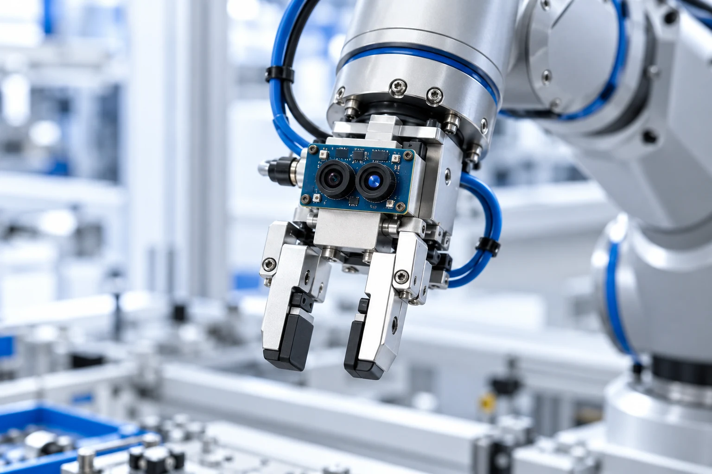

DEPENDABLE MICROELECTRONICS
Precision at the core
of your equipment.
Reliable integrated circuits and sensors for industrial automation, robotics, and precision equipment.
PRECISIONCORE / OUR PURPOSE
PrecisionCore is a microelectronics manufacturer specializing in reliable integrated circuits and sensors for industrial automation, robotics, and precision equipment.
Get to know PrecisionCoreIntegrated circuits and sensors for industrial equipment.
Dependable components for robotic applications.
Microelectronics for equipment where precision matters.

FROM COMPONENTS TO APPLICATIONS
Integrated circuits and sensors support the equipment used in industrial automation, robotics, and precision applications.
Explore our component categories